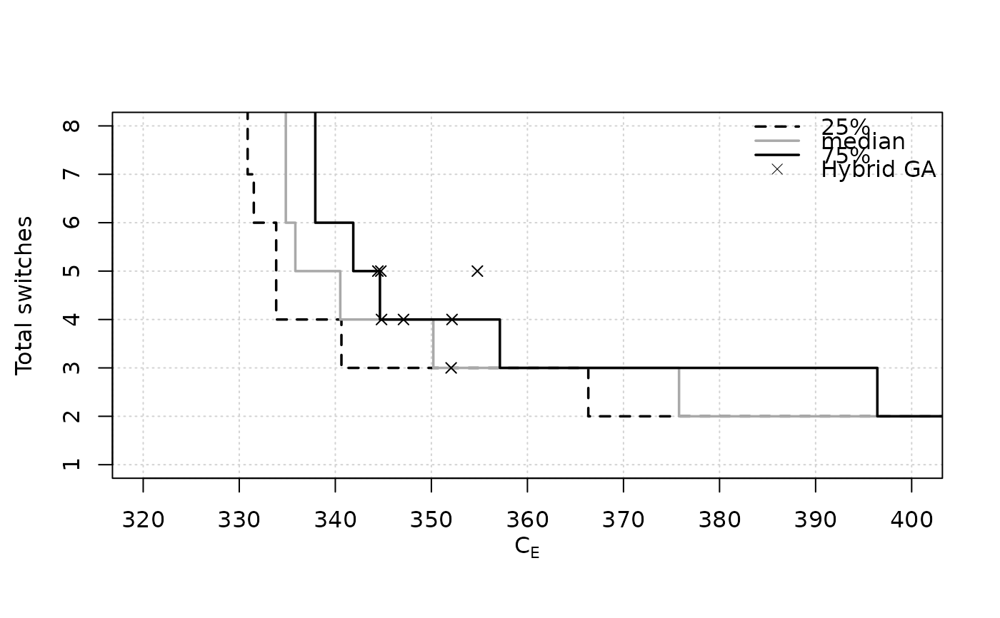
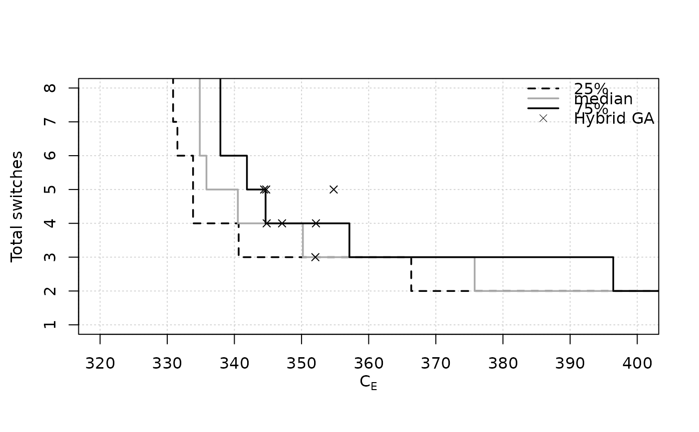

Computes and plots the Empirical Attainment Function, either as attainment surfaces for certain percentiles or as points.
Usage
eafplot(x, ...)
# S3 method for default
eafplot(
x,
sets = NULL,
groups = NULL,
percentiles = c(0, 50, 100),
attsurfs = NULL,
xlab = NULL,
ylab = NULL,
xlim = NULL,
ylim = NULL,
log = "",
type = "point",
col = NULL,
lty = c("dashed", "solid", "solid", "solid", "dashed"),
lwd = 1.75,
pch = NA,
cex.pch = par("cex"),
las = par("las"),
legend.pos = "topright",
legend.txt = NULL,
extra.points = NULL,
extra.legend = NULL,
extra.pch = 4:25,
extra.lwd = 0.5,
extra.lty = NA,
extra.col = "black",
maximise = c(FALSE, FALSE),
xaxis.side = "below",
yaxis.side = "left",
axes = TRUE,
sci.notation = FALSE,
...
)
# S3 method for formula
eafplot(formula, data, groups = NULL, subset = NULL, ...)
# S3 method for list
eafplot(x, ...)Arguments
- x
Either a matrix of data values, or a data frame, or a list of data frames of exactly three columns.
- ...
Other graphical parameters to
plot.default().- sets
(numeric)
Vector indicating which set each point belongs to.- groups
This may be used to plot profiles of different algorithms on the same plot.
- percentiles
(
numeric()) Vector indicating which percentile should be plot. The default is to plot only the median attainment curve.- attsurfs
TODO
- xlab, ylab, xlim, ylim, log, col, lty, lwd, pch, cex.pch, las
Graphical parameters, see
plot.default().- type
(
character(1))
string giving the type of plot desired. The following values are possible, points and area.- legend.pos
the position of the legend, see
legend(). A value of"none"hides the legend.- legend.txt
a character or expression vector to appear in the legend. If
NULL, appropriate labels will be generated.- extra.points
A list of matrices or data.frames with two-columns. Each element of the list defines a set of points, or lines if one of the columns is
NA.- extra.legend
A character vector providing labels for the groups of points.
- extra.pch, extra.lwd, extra.lty, extra.col
Control the graphical aspect of the points. See
points()andlines().- maximise
(
logical()|logical(1))
Whether the objectives must be maximised instead of minimised. Either a single logical value that applies to all objectives or a vector of logical values, with one value per objective.- xaxis.side
On which side that xaxis is drawn. Valid values are "below" and "above". See
axis().- yaxis.side
On which side that yaxis is drawn. Valid values are "left" and "right". See
axis().- axes
A logical value indicating whether both axes should be drawn on the plot.
- sci.notation
Generate prettier labels
- formula
A formula of the type:
time + cost ~ run | instancewill drawtimeon the x-axis andcoston the y-axis. Ifinstanceis present the plot is conditional to the instances.- data
Dataframe containing the fields mentioned in the formula and in groups.
- subset
(
integer()|NULL)
A vector indicating which rows of the data should be used. If left to defaultNULLall data in the data frame are used.
Details
This function can be used to plot random sets of points like those obtained by different runs of biobjective stochastic optimization algorithms. An EAF curve represents the boundary separating points that are known to be attainable (that is, dominated in Pareto sense) in at least a fraction (quantile) of the runs from those that are not. The median EAF represents the curve where the fraction of attainable points is 50%. In single objective optimization the function can be used to plot the profile of solution quality over time of a collection of runs of a stochastic optimizer.
Methods (by class)
eafplot(default): Main functioneafplot(formula): Formula interfaceeafplot(list): List interface for lists of data.frames or matrices
Examples
data(gcp2x2)
tabucol <- subset(gcp2x2, alg != "TSinN1")
tabucol$alg <- tabucol$alg[drop=TRUE]
eafplot(time + best ~ run, data = tabucol, subset = tabucol$inst=="DSJC500.5")
 # These take time
eafplot(time + best ~ run | inst, groups=alg, data=gcp2x2)
# These take time
eafplot(time + best ~ run | inst, groups=alg, data=gcp2x2)
 eafplot(time + best ~ run | inst, groups=alg, data=gcp2x2,
percentiles=c(0,50,100), cex.axis = 0.8, lty = c(2,1,2), lwd = c(2,2,2),
col = c("black","blue","grey50"))
eafplot(time + best ~ run | inst, groups=alg, data=gcp2x2,
percentiles=c(0,50,100), cex.axis = 0.8, lty = c(2,1,2), lwd = c(2,2,2),
col = c("black","blue","grey50"))
 extdata_path <- system.file(package = "eaf", "extdata")
A1 <- read_datasets(file.path(extdata_path, "ALG_1_dat.xz"))
A2 <- read_datasets(file.path(extdata_path, "ALG_2_dat.xz"))
eafplot(A1, percentiles = 50, sci.notation = TRUE, cex.axis=0.6)
extdata_path <- system.file(package = "eaf", "extdata")
A1 <- read_datasets(file.path(extdata_path, "ALG_1_dat.xz"))
A2 <- read_datasets(file.path(extdata_path, "ALG_2_dat.xz"))
eafplot(A1, percentiles = 50, sci.notation = TRUE, cex.axis=0.6)
 # The attainment surfaces are returned invisibly.
attsurfs <- eafplot(list(A1 = A1, A2 = A2), percentiles = 50)
# The attainment surfaces are returned invisibly.
attsurfs <- eafplot(list(A1 = A1, A2 = A2), percentiles = 50)
 str(attsurfs)
#> List of 2
#> $ 50: num [1:1183, 1:2] 4.95e+09 4.95e+09 4.95e+09 4.95e+09 4.96e+09 ...
#> ..- attr(*, "dimnames")=List of 2
#> .. ..$ : chr [1:1183] "1" "2" "3" "4" ...
#> .. ..$ : chr [1:2] "X1" "X2"
#> $ 50: num [1:1422, 1:2] 5.16e+09 5.17e+09 5.18e+09 5.21e+09 5.21e+09 ...
#> ..- attr(*, "dimnames")=List of 2
#> .. ..$ : chr [1:1422] "1184" "1185" "1186" "1187" ...
#> .. ..$ : chr [1:2] "X1" "X2"
## Save as a PDF file.
# dev.copy2pdf(file = "eaf.pdf", onefile = TRUE, width = 5, height = 4)
## Using extra.points
# \dontrun{
data(HybridGA)
data(SPEA2relativeVanzyl)
eafplot(SPEA2relativeVanzyl, percentiles = c(25, 50, 75),
xlab = expression(C[E]), ylab = "Total switches", xlim = c(320, 400),
extra.points = HybridGA$vanzyl, extra.legend = "Hybrid GA")

data(SPEA2relativeRichmond)
eafplot (SPEA2relativeRichmond, percentiles = c(25, 50, 75),
xlab = expression(C[E]), ylab = "Total switches",
xlim = c(90, 140), ylim = c(0, 25),
extra.points = HybridGA$richmond, extra.lty = "dashed",
extra.legend = "Hybrid GA")
str(attsurfs)
#> List of 2
#> $ 50: num [1:1183, 1:2] 4.95e+09 4.95e+09 4.95e+09 4.95e+09 4.96e+09 ...
#> ..- attr(*, "dimnames")=List of 2
#> .. ..$ : chr [1:1183] "1" "2" "3" "4" ...
#> .. ..$ : chr [1:2] "X1" "X2"
#> $ 50: num [1:1422, 1:2] 5.16e+09 5.17e+09 5.18e+09 5.21e+09 5.21e+09 ...
#> ..- attr(*, "dimnames")=List of 2
#> .. ..$ : chr [1:1422] "1184" "1185" "1186" "1187" ...
#> .. ..$ : chr [1:2] "X1" "X2"
## Save as a PDF file.
# dev.copy2pdf(file = "eaf.pdf", onefile = TRUE, width = 5, height = 4)
## Using extra.points
# \dontrun{
data(HybridGA)
data(SPEA2relativeVanzyl)
eafplot(SPEA2relativeVanzyl, percentiles = c(25, 50, 75),
xlab = expression(C[E]), ylab = "Total switches", xlim = c(320, 400),
extra.points = HybridGA$vanzyl, extra.legend = "Hybrid GA")

data(SPEA2relativeRichmond)
eafplot (SPEA2relativeRichmond, percentiles = c(25, 50, 75),
xlab = expression(C[E]), ylab = "Total switches",
xlim = c(90, 140), ylim = c(0, 25),
extra.points = HybridGA$richmond, extra.lty = "dashed",
extra.legend = "Hybrid GA")
 eafplot (SPEA2relativeRichmond, percentiles = c(25, 50, 75),
xlab = expression(C[E]), ylab = "Total switches",
xlim = c(90, 140), ylim = c(0, 25), type = "area",
extra.points = HybridGA$richmond, extra.lty = "dashed",
extra.legend = "Hybrid GA", legend.pos = "bottomright")
eafplot (SPEA2relativeRichmond, percentiles = c(25, 50, 75),
xlab = expression(C[E]), ylab = "Total switches",
xlim = c(90, 140), ylim = c(0, 25), type = "area",
extra.points = HybridGA$richmond, extra.lty = "dashed",
extra.legend = "Hybrid GA", legend.pos = "bottomright")
 data(SPEA2minstoptimeRichmond)
SPEA2minstoptimeRichmond[,2] <- SPEA2minstoptimeRichmond[,2] / 60
eafplot (SPEA2minstoptimeRichmond, xlab = expression(C[E]),
ylab = "Minimum idle time (minutes)", maximise = c(FALSE, TRUE),
las = 1, log = "y", main = "SPEA2 (Richmond)",
legend.pos = "bottomright")
data(SPEA2minstoptimeRichmond)
SPEA2minstoptimeRichmond[,2] <- SPEA2minstoptimeRichmond[,2] / 60
eafplot (SPEA2minstoptimeRichmond, xlab = expression(C[E]),
ylab = "Minimum idle time (minutes)", maximise = c(FALSE, TRUE),
las = 1, log = "y", main = "SPEA2 (Richmond)",
legend.pos = "bottomright")
 # }
# }